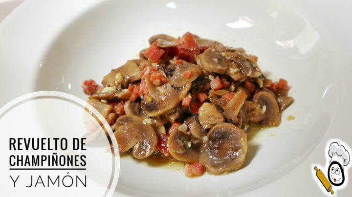

Champiñones al ajillo

Ingredientes
- 1 kg champiñones pequeños
- 9 cucharadas soperas de aceite
- 3 dientes de ajo pelados y picados
- 2 cucharadas soperas de perejil picado
- limon para zumo
- agua y sal
Elaboración
- Cepille bien los champiñones
- Lávelos bien
- Prepare 6 platidos de barro y écheles el aceite
- Sírvalos en seguida y muy calientes